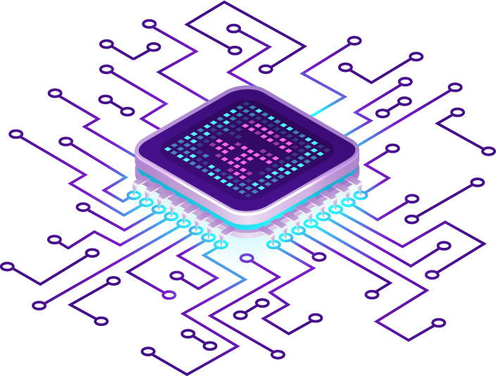
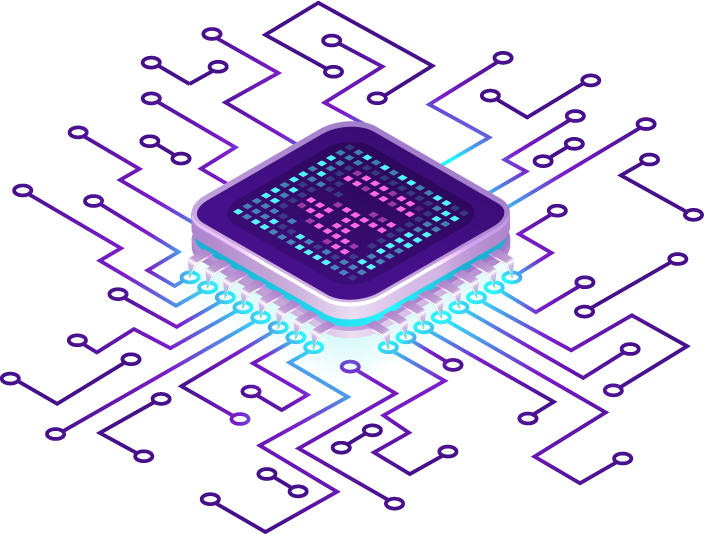

Bienvenido a UMP
Explora la malla curricular del curso “Teorías del Aprendizaje en la Era Digital”, diseñado para ayudarte a comprender cómo la tecnología transforma los procesos educativos. Este curso te permitirá conocer los contenidos, objetivos y herramientas que impulsan la enseñanza en entornos digitales.
 
